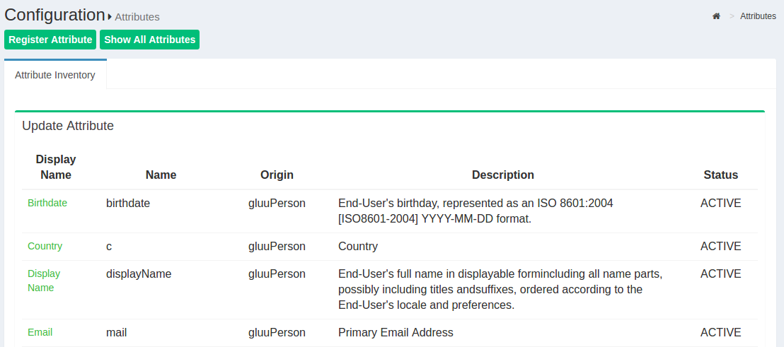
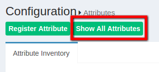
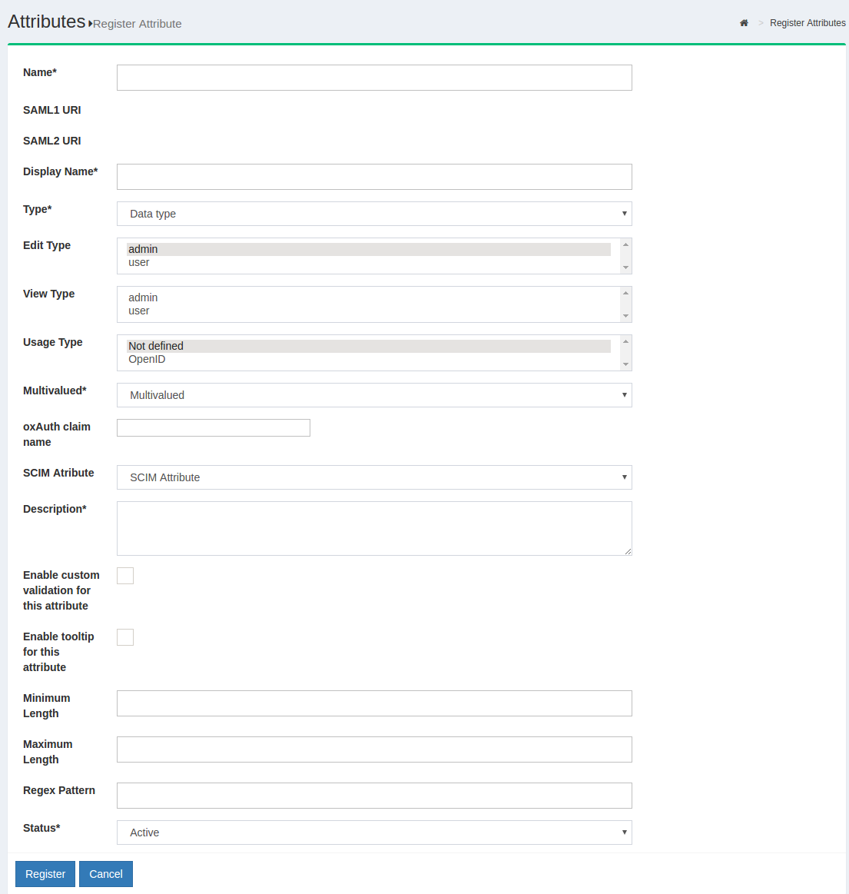

Attribute Management
An Active attribute list can be seen from the Configuration > Attributes section.

The Gluu Server has a large LDAP tree which includes all standard attributes. It is not necessary for all of them to be Active. The active LDAP trees can be sorted using the Show only Active Attributes link.

The Gluu Server administrator can make changes, such as changing the status to active/inactive, to an attribute after clicking on it.

Additional attributes can be added from the Gluu Server GUI, oxTrust, by clicking the Add Attribute button. Then, the following screen will appear:

-
Name: This field defines the name of the custom attribute which must be unique in the Gluu Server LDAP tree.
-
SAML1 URI: This field contains the SAML1 uri for the custom attribute.
-
SAML2 URI: This field contains the SAML2 uri for the custom attribute.
-
Display Name: This display name can be anything that is human readable.
-
Type: The attribute type should be selected from the drop-down menu. There are four attribute types supported by Gluu:
- Text
- Numeric
- Photo
-
Date
-
Edit Type: This field controls which type of an user is allowed to edit corresponding attribute at his/her "Profile" page of the web UI (when feature "User can edit own profile" is enabled).
-
View Type: This field controls which type of an user is allowed to view corresponding attribute at his/her "Profile" page of the web UI.
-
Privacy Level: Please select the desired privacy level from the drop-down menu. The privacy level has a specific range of 1 to 5.
-
Multivalued: Please select multivalue in this field if the attribute contains more than one value.
-
SCIM Attributes: If the attribute is a part of SCIM architecture select true.
-
Description: This contains a few words to describe the attribute.
-
Status: The status, when selected active, will release and publish the attribute in IdP.